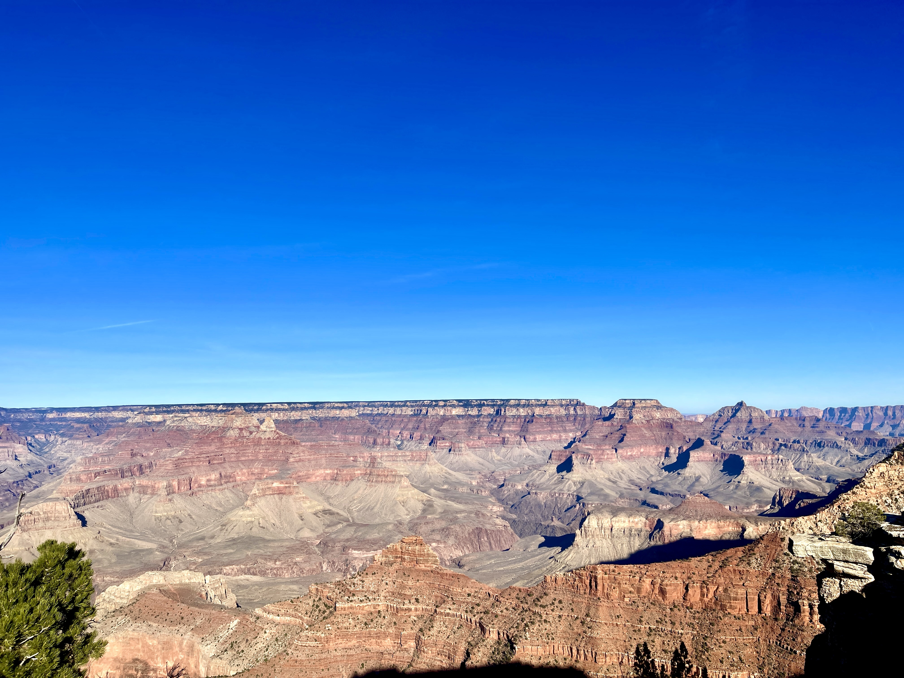
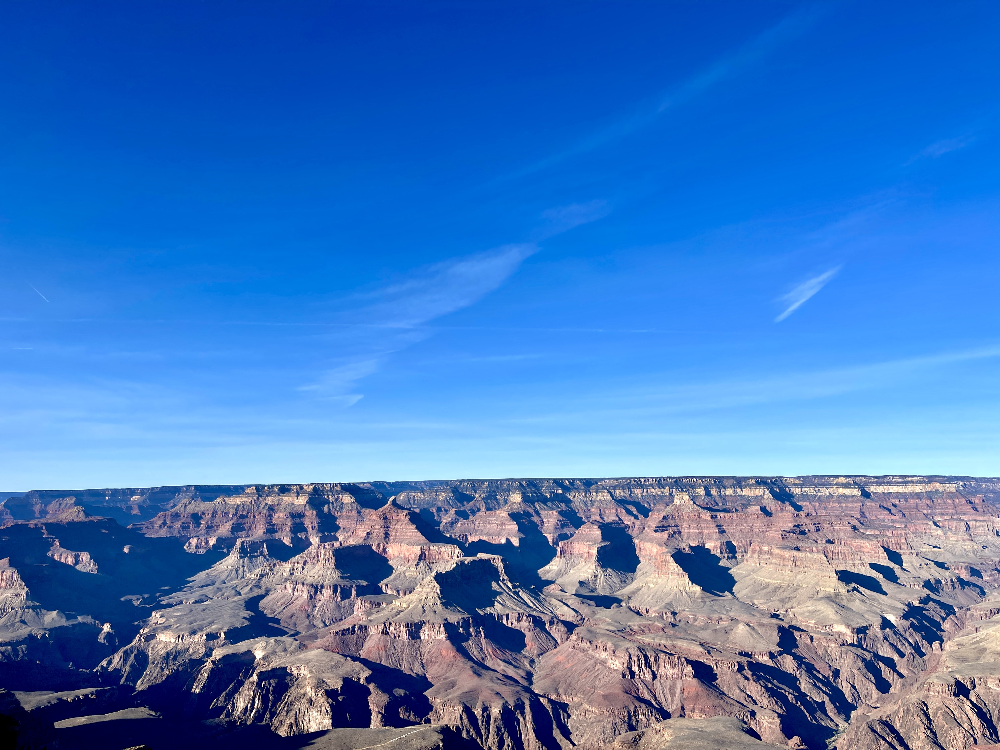
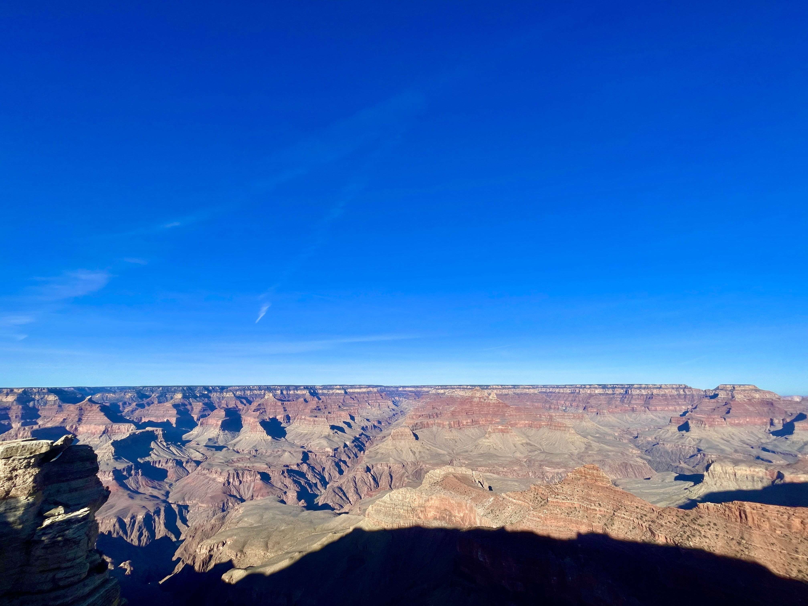
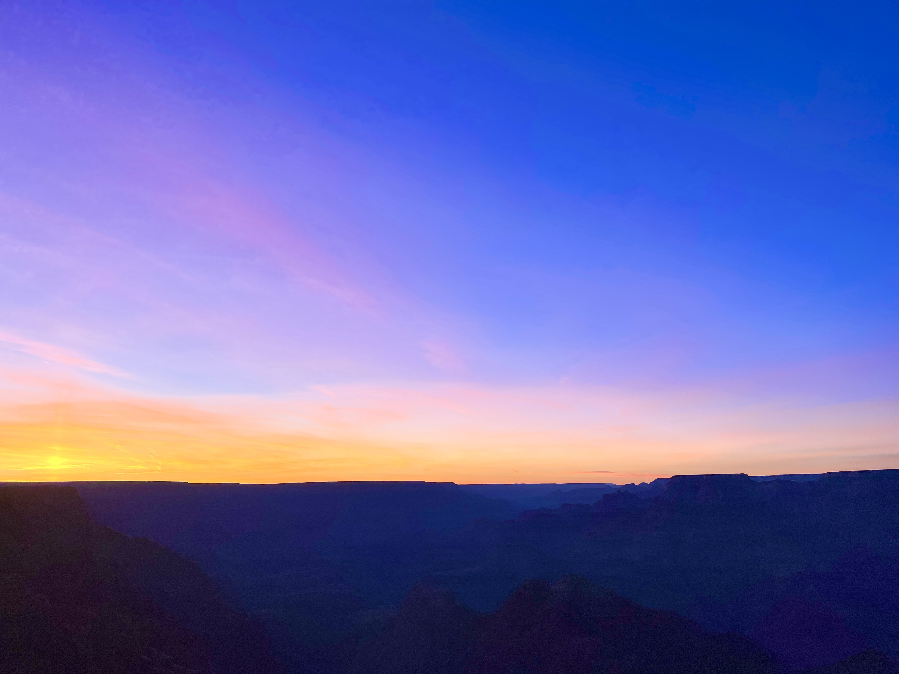
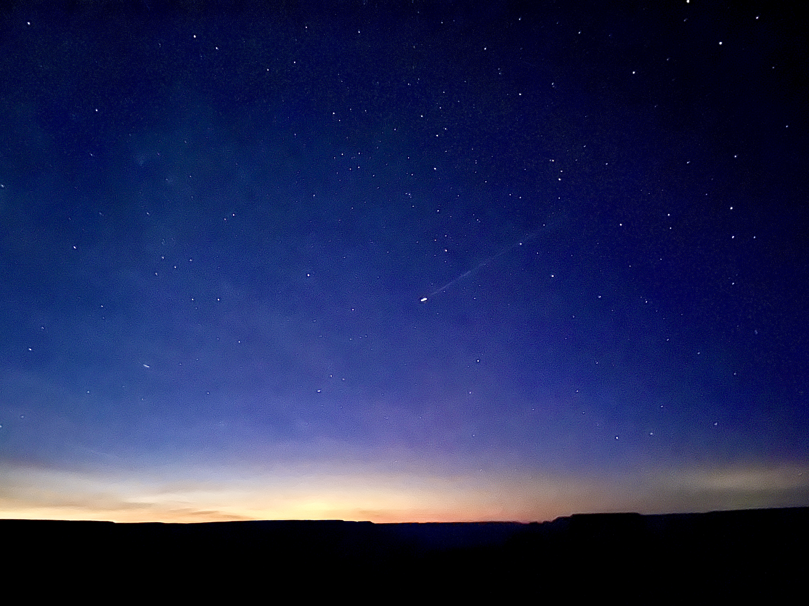
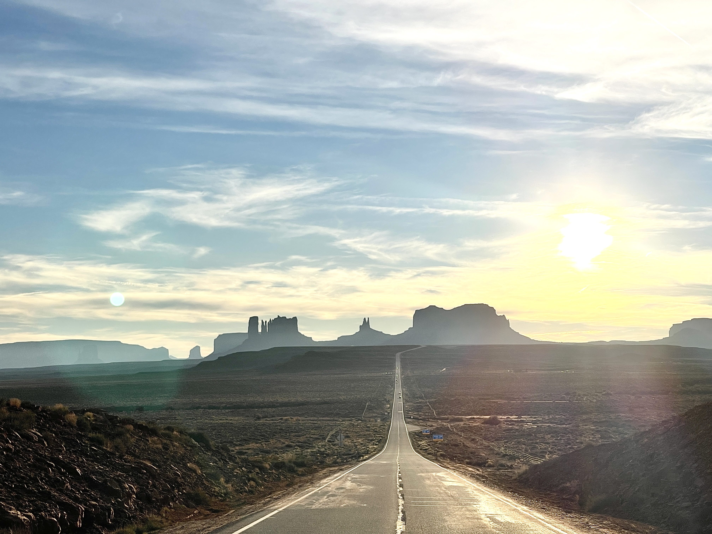

Travel Gallery
Famous Landmarks & Tourist Attractions
Arizona is famous for its landmarks and tourist attractions, with the Grand Canyon being the most notable, hence why Arizona is dubbed the Grand Canyon State. The Grand Canyon National Park is in fact, one of the most visited national parks in the United States, with over 4-5 million visitors per year. Aside from the Grand Canyon, Arizona is also home to the Horseshoe Bend, Antelope Canyon, and Monument Valley.
The Grand Canyon





Desert View Tower, Grand Canyon


Horseshoe Bend

Monument Valley

All photographs above were taken by me in November 2025
Bonus: The Grand Canyon McDonald's